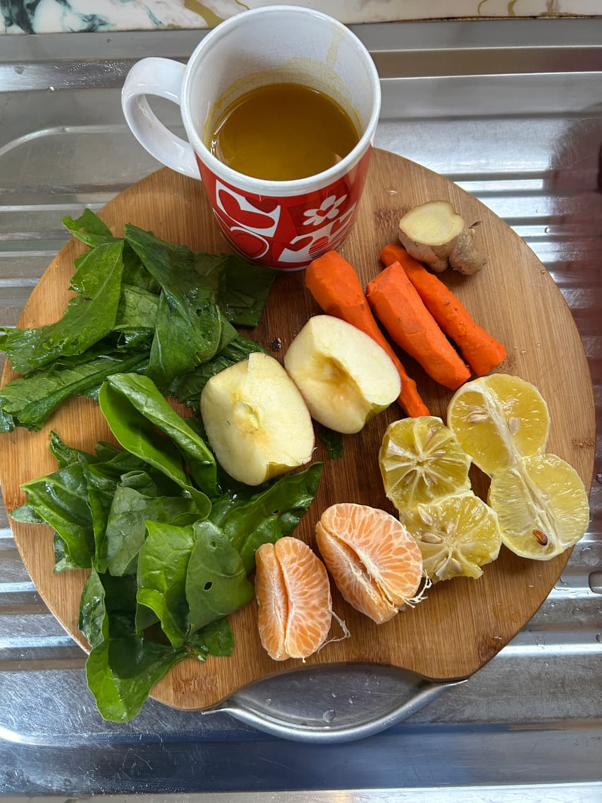
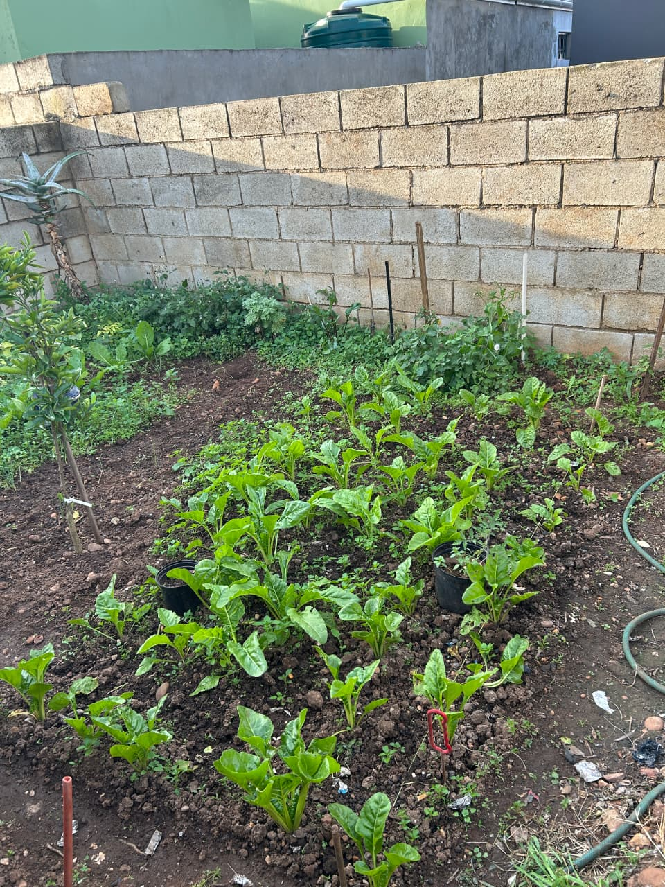

Natural Gut Cleanse Juices
Freshly extracted potent blends designed to flush toxins, ease digestion, and restore core energy.
Established in 2026 and located in Motherwell, N.U 4B, Gqeberha, Nourished By Kay specializes in premium skin products and natural gut cleansing solutions. Every single product is expertly handcrafted by Kamvalethu Kama, blending traditional botanical knowledge with raw, clean wellness.

Freshly extracted potent blends designed to flush toxins, ease digestion, and restore core energy.

Handcrafted cleansing shots packed with vital nutrients to rejuvenate your digestive system.
Organic formulations made to hydrate, repair, and give your skin a natural, healthy glow.
We believe in absolute transparency and true earth-to-bottle goodness. Our ingredients are cultivated right here in our local garden plots in Motherwell, ensuring absolute freshness, zero harsh chemicals, and authentic local craftsmanship.